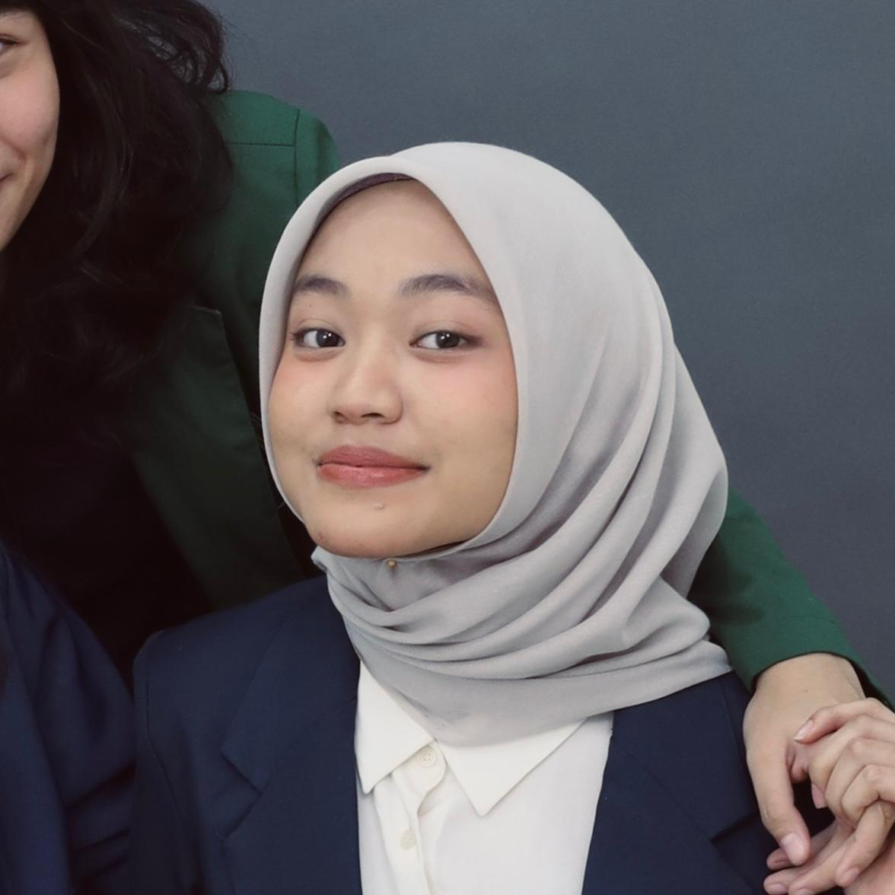

English speaking
Java programming
The Most Inspiring Student (2022)
Big Data
Machine learning
Books
Research
Arts & visual designs
I have a background in Information systems, with a focus on building systems and the UI design. I am the type of person who wills to learn through collaborations and real-world projects.